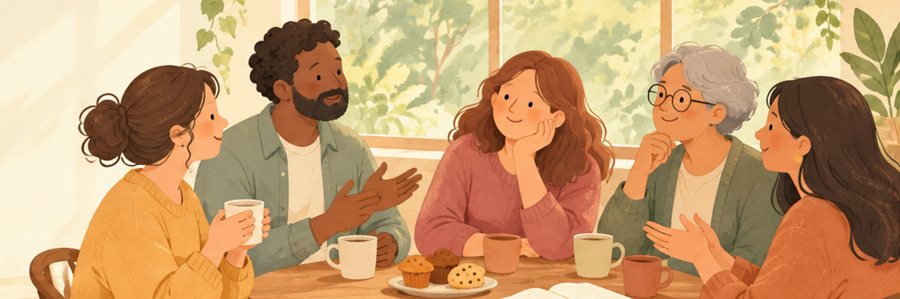
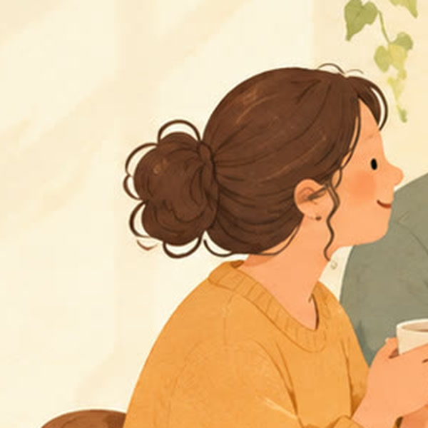
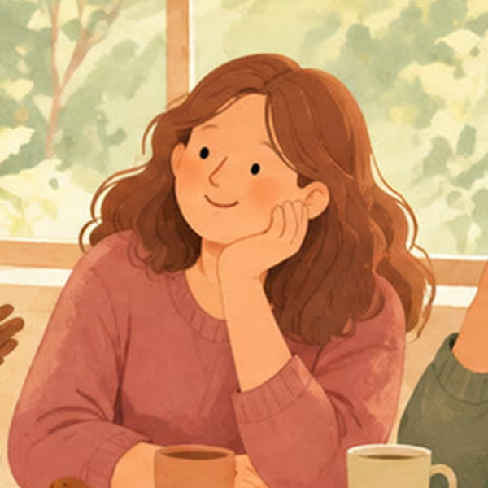
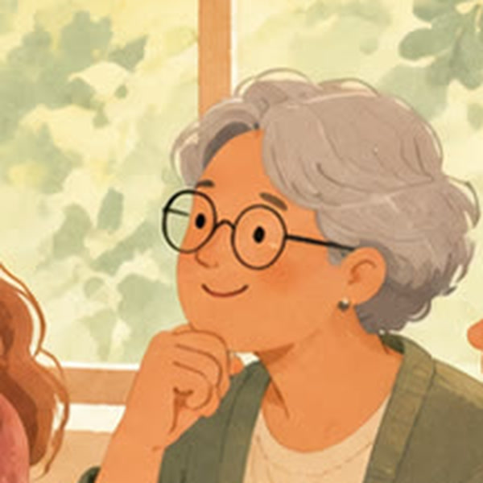

少人数だから、
話せること。

「もっと頑張らなきゃ」
「どう関わればいい？」
子どもの気持ち、
ちゃんと知りたい。
第2弾
発達凸凹ティータイム ×
発達っ子ママキャリアデザイン室 共催
発達特性の
子育て応援カフェ

〜子どもを真ん中に。〜
家族も、先生も、支援者も、
みんながみんなの応援団
こんな会です
1
当事者の話を聞く子どもの頃に見えていた世界を語ります
2
少人数で、座談会気軽に質問・おしゃべり。お子様連れOK
3
サポートブックを知る家庭・学校・支援者で共有するツール

ちこ発達障がい当事者
発達凸凹ティータイム共同主催者
発達凸凹ティータイム共同主催者

小山あきこ発達っ子ママ
キャリアデザイン室主催者
キャリアデザイン室主催者
第1回の参加者の声
「インタラクティブな場を作って下さってありがとうございました。気軽に質問できて有益でした。」

参加者アンケート・終了後のメッセージより（匿名・掲載承諾済み）
※イラストはイメージです
第1回の参加者の声
「実際にお会いして直にお話を伺ったり会話する事ができ、とても安心しました。当事者として様々な活動の場を広げている方とのお話は貴重な時間となりました。」

参加者アンケート・終了後のメッセージより（匿名・掲載承諾済み）
※イラストはイメージです
第1回の参加者の声
「サポートブックを通じて、発達障害を持つお子さん、そうでなくても、誰もが生きやすい、安心できる居場所を作れればと感じました。」

参加者アンケート・終了後のメッセージより（匿名・掲載承諾済み）
※イラストはイメージです
第2弾 開催概要
日時11/15(日)14:00〜16:00受付13:50〜／途中参加・途中退席も自由
会場あやセンター ぐるぐる足立区綾瀬／綾瀬駅西口 徒歩約3分
参加費500円お子様は無料
お菓子付き
お菓子付き
定員若干名お住まいは
問いません
問いません
お申し込みは
プロフィールの
リンクから

@akiko_mentor_autism
一人で抱え込まなくて、大丈夫。
共催：発達凸凹ティータイム × 発達っ子ママキャリアデザイン室